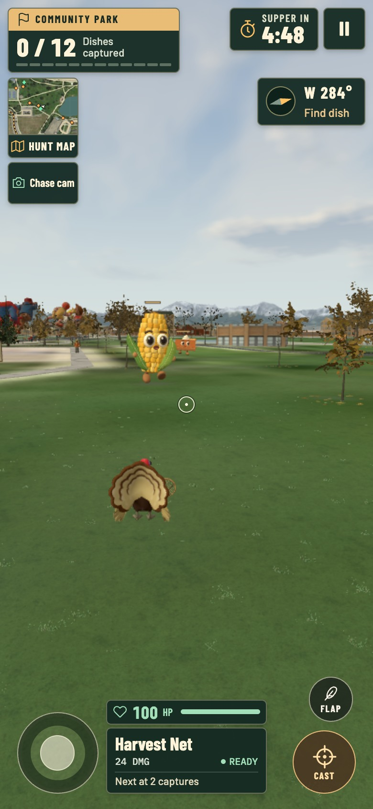
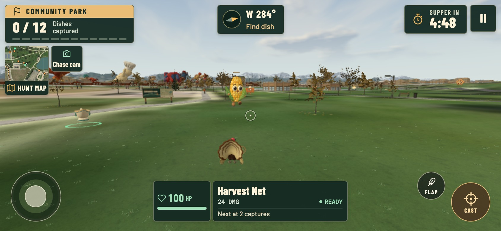
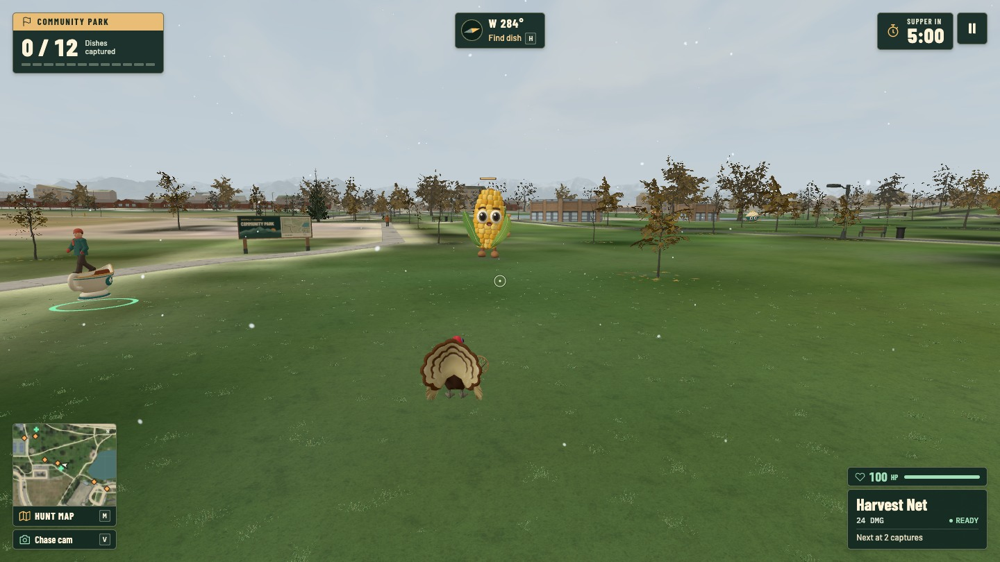
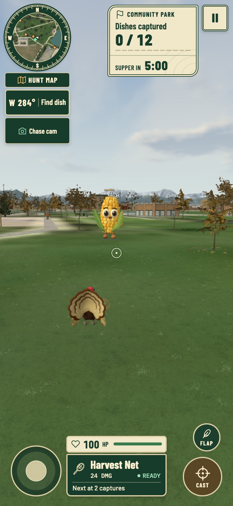
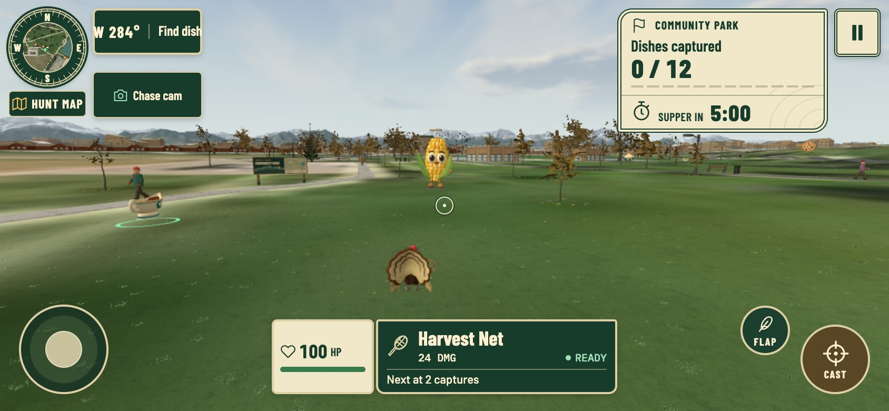
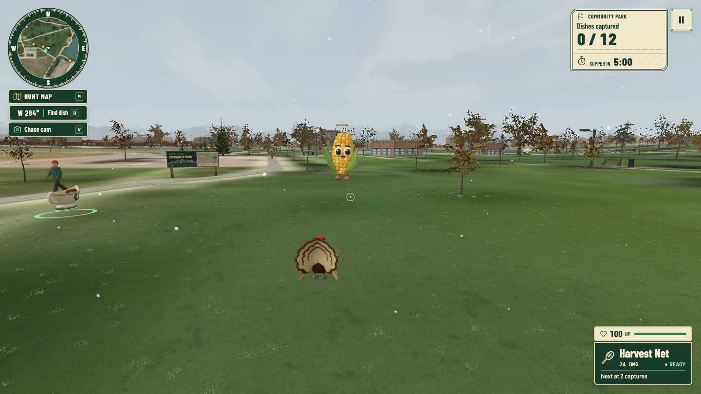
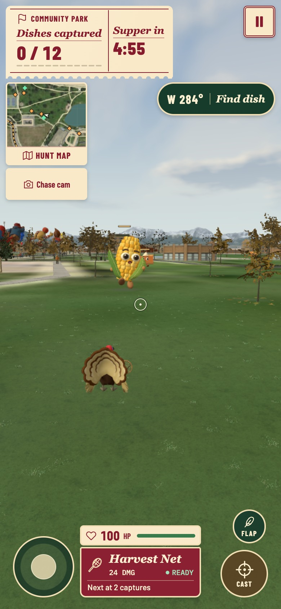
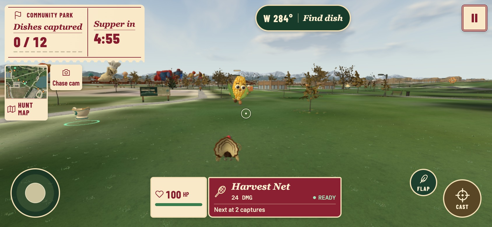
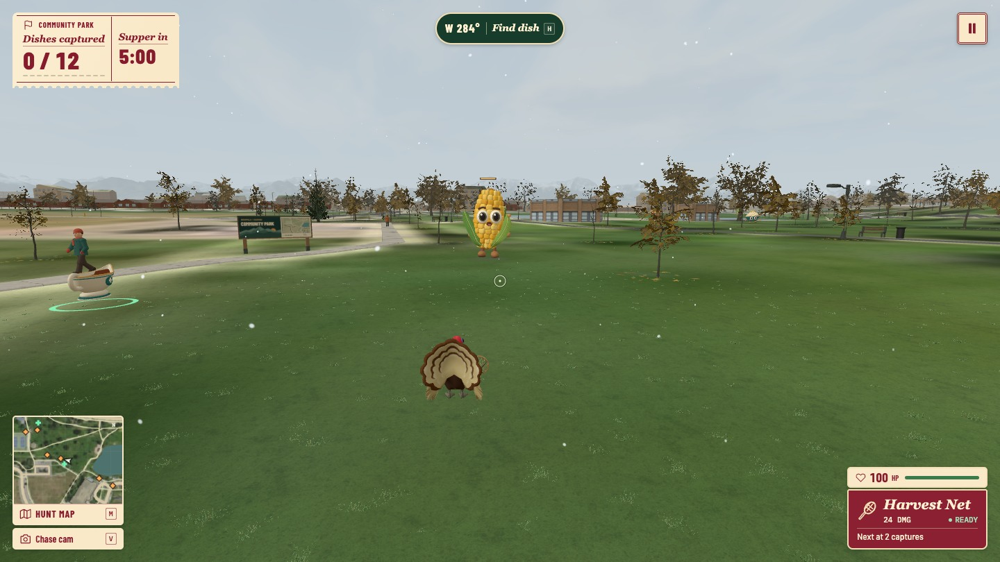

Field Kit
Default


The gold header marks the objective. A green health bar sits beside the equipped tool.
Trail Atlas



The circular map groups your bearing, dish finder, and camera control in one place.
Supper Ticket



A diner order slip pairs dishes captured with time until supper. The equipment card uses cranberry ink.
Original mockups and capture notes
All nine views show the playable game. Phone captures use a 390 × 844 viewport in both orientations. Desktop captures use a 1440 × 810 viewport.
Original design studies · Phone comparison · Trail Atlas desktop · Supper Ticket desktop


Trail Atlas, desktop
Use case: ui-mockup. Make one polished, shippable desktop game HUD over Image 1, the exact 16:9 gameplay frame from Turkey Takeover. Image 2 is the actual radar and supplies its map pixels and orange diamond markers. The idea is “Trail Atlas”: an asymmetric, map-first HUD inspired by printed Colorado orienteering maps and a handheld trail compass. Do not print the concept name. Lock the entire underlying 3D frame, crop, original pixel style, turkey, cartoon corn, balloons, horizon, greenery and light. Render every UI piece flat and straight-on at actual gameplay scale. The central 65% of the image stays clear except for a tiny white ring reticle at the exact center and the compact one-line hazard below it, “Brussels toot ahead · Dodge!”. Top left, a compact 160px circular north-up woodland-green cartographic instrument, thin parchment survey rings with discreet cardinal marks, actual aerial radar inside, small cream player arrow, orange diamond pins. Immediately below the dial is a two-line narrow dark navigation tab, first “W 284°” with “Find dish [H]”, then “Hunt map [M]” and “Chase cam [V]”. Use little drawn keycaps, not literal square brackets. Top right, a very compact map-legend style plate, deep spruce ink on warm ivory, orange flag, “Dishes captured” and large “0 / 12” with a subordinate row for “Supper in 4:15”. Adjacent pause icon. Lower right, a compact spruce panel with pale letters and mint health stripe “100 HP”, “Harvest Net”, “24 DMG · READY” and “Next at 2 captures”. Use excellent small typography: condensed legible sans values, cartographic micro-labels. Restrained angular contours, a consistent 26px edge inset, confident hairlines. Retain all specified controls once. No concept title, no extra labels, no tutorial, no external presentation border, no new characters, no modifications to the actual gameplay world. Frame ratio must be 16:9.
Supper Ticket, desktop
Use case: ui-mockup. Create one finished desktop game HUD over Image 1, a locked 16:9 Turkey Takeover gameplay screenshot. Image 2 supplies the actual radar pixels. Concept: a 1950s American diner order ticket for a Thanksgiving food fight, cheerful and easy to scan. Never display the concept name. Use the exact same unaltered screenshot composition, 3D low-poly turkey and corn, distant balloons and sky as Image 1. Flat head-up overlay only. No changes to the terrain or game art. Upper left, a little horizontally oriented cream order slip with cranberry-red ink, perforated bottom edge, slim red rule and two typographic columns: “Dishes captured” above a bold “0 / 12”, “Supper in” above bold “4:15”. An index-card feel, large condensed athletic numbers, without shiny chrome or fake wood. Upper middle just a modest forest-green horizontal lozenge “W 284°” and “Find dish [H]”; upper right one small cream pause button. Lower left, small rectangular actual aerial minimap from Image 2 in a slim cream ticket frame with orange dish diamonds and a player arrow; footers “Hunt map [M]” and “Chase cam [V]”. Lower right, deep cranberry equipment tab, a simple illustrated harvest-net silhouette beside “Harvest Net”, “24 DMG · READY” and discreet “Next at 2 captures” with a narrow pale top strip for “100 HP” and a small full health meter. Center: a tiny white reticle ring and a very short ochre warning below, reading “Brussels toot ahead · Dodge!”. Make keyboard letters in real little outlined keycaps. Text must be spelled exactly. Keep all panels close to corners with a generous, uncluttered view for the turkey; each peripheral grouping should occupy less than a fifth of the frame width. Quality: restrained, polished, tactile screenprint design with tiny ink details. No scene redesign, no title, no invented copy or counters, no jokes or other HUD items, no board framing. 16:9 landscape.
Trail Atlas, phone
Use case: ui-mockup. Deliver a single full-bleed vertical 390:844 phone screenshot of a 3D turkey game. Image 1 is the actual HUD-free portrait phone playfield; preserve its exact pixel composition, colors, low-poly art, horizon, central cartoon corn, rear-view turkey and position of the turkey. Image 2 is the matching DESKTOP art direction; adapt its visual vocabulary for a PHONE. Image 3 is a phone layout reference for the size and location of the touch controls. The phone frame is the output; do not draw a physical device or a presentation background. Every control must fit within the screenshot edges. Large thumb joystick bottom-left, two separate round buttons 'Flap' and 'Cast' lower-right, a single compact equipment readout between the two hands reading '100 HP', 'Harvest Net', '24 DMG · READY', 'Next at 2 captures'. The small reticle is centered and most of the screen is open. No desktop keyboard letters or keycaps anywhere. Keep every requested HUD element once and only once. No invented labels, no promotional headline. All graphics are 2D overlays. Adapt the orienteering compass concept. Upper left: one small circular spruce-and-cream north-up aerial map with orange diamond dish markers, a precise cream compass ring and cardinal letters. Its compact tabs below read 'W 284°', 'Find dish', 'Hunt map' and 'Chase cam'. Top right: a modest cream map-legend card with orange flag icon, 'Dishes captured' and '0 / 12', and a smaller 'Supper in 4:15' row. Give Pause its own identifiable touch button. The bottom kit is green and cream with a mint health indicator. Match the desktop concept's subtle angular edges and cartographic linework; make controls feel usable by thumb. Accurate saturated warm ivory and deep spruce colors. Preserve the portrait crop and resolution ratio.
Supper Ticket, phone
Use case: ui-mockup. Deliver a single full-bleed vertical 390:844 phone screenshot of a 3D turkey game. Image 1 is the actual HUD-free portrait phone playfield; preserve its exact pixel composition, colors, low-poly art, horizon, central cartoon corn, rear-view turkey and position of the turkey. Image 2 is the matching DESKTOP art direction; adapt its visual vocabulary for a PHONE. Image 3 is a phone layout reference for the size and location of the touch controls. The phone frame is the output; do not draw a physical device or a presentation background. Every control must fit within the screenshot edges. Large thumb joystick bottom-left, two separate round buttons 'Flap' and 'Cast' lower-right, a single compact equipment readout between the two hands reading '100 HP', 'Harvest Net', '24 DMG · READY', 'Next at 2 captures'. The small reticle is centered and most of the screen is open. No desktop keyboard letters or keycaps anywhere. Keep every requested HUD element once and only once. No invented labels, no promotional headline. All graphics are 2D overlays. Adapt the diner's order-slip concept. Upper left: a small perforated cream slip with cranberry-red type in two columns reading 'Dishes captured', '0 / 12', 'Supper in', '4:15'. Pause control top right. Below the order slip: left, a small cream-framed north-up aerial radar with orange dish diamonds, with 'Hunt map' and 'Chase cam' tap targets; right, a small evergreen compass lozenge with 'W 284°' and 'Find dish'. Keep these elements above the horizon for portrait mobile. Bottom center gear card is cranberry and cream with a mint health stripe and the simple net illustration from Image 2. Make the joystick and separate Cast and Flap buttons fit the same warm diner palette. Use expressive headline lettering only for the largest numerals and highly readable letters for controls, including their capitalization. Preserve the portrait crop and resolution ratio.